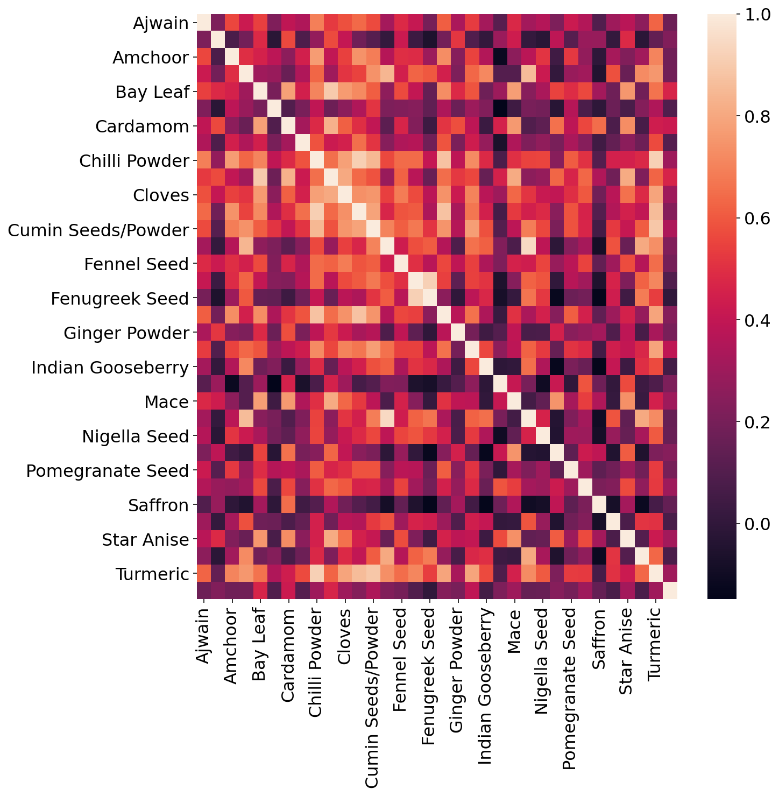
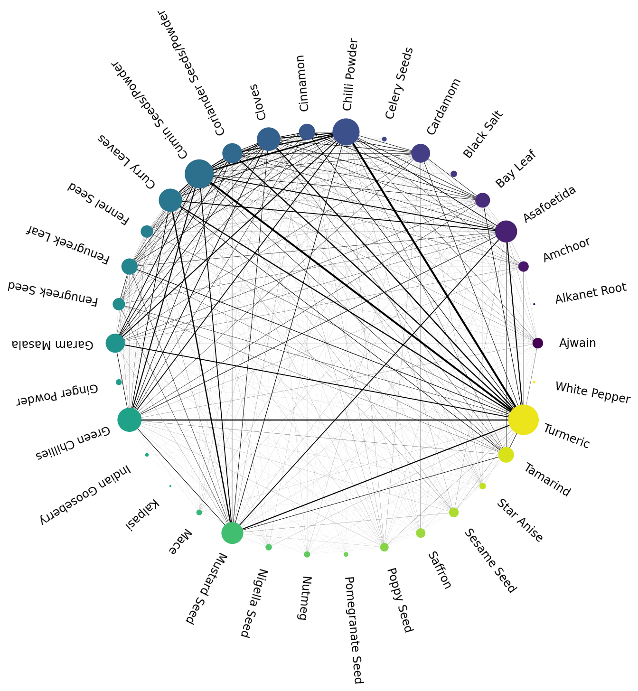

import pandas as pd
import numpy as np Find out which relations between different Indian spices
Spices are central to Indian cuisine. What is referred to colloquially as ‘Indian’ food is made of many different sub-cuisines. As a result, there are a plethora of spices usually brought up when considering ‘Indian’ food. Knowing which spices are most frequently used can help cooks novice or seasoned to make an informed decision about spices that promise the most bang for the buck.
I use a Kaggle dataset containing 6000+ recipes from https://www.archanaskitchen.com/. Using this data as base collection of recipes representing most of the indian food, I analyze which spices occur most freqeuntly and which spices are most connected to each other.
- Dataset for Indian recipe: This dataset 6000+ recipe scrapped from | Link to the dataset
#----- PLOTTING PARAMS ----#
import matplotlib.pyplot as plt
from matplotlib.pyplot import cm
import seaborn as sns
%config InlineBackend.figure_format = 'retina'
%config InlineBackend.print_figure_kwargs={'facecolor' : "w"}
plot_params = {
'font.size' : 22,
'axes.titlesize' : 24,
'axes.labelsize' : 20,
'xtick.labelsize' : 16,
'ytick.labelsize' : 16,
}
plt.rcParams.update(plot_params)Read the dataset
food_df = pd.read_csv('./data/IndianFoodDatasetCSV.csv')food_df.columnsIndex(['Srno', 'RecipeName', 'TranslatedRecipeName', 'Ingredients',
'TranslatedIngredients', 'PrepTimeInMins', 'CookTimeInMins',
'TotalTimeInMins', 'Servings', 'Cuisine', 'Course', 'Diet',
'Instructions', 'TranslatedInstructions', 'URL'],
dtype='object')food_df.shape(6871, 15)# dropping miscellaneous columns and NaN entries
columns_to_drop = ['CookTimeInMins', 'Servings', 'Course', 'Diet', 'Instructions', 'TranslatedInstructions', 'URL']
food_df = food_df.drop(columns = columns_to_drop).dropna()# data has indian-inspired international cuisines which are not what we are interested in
cuisines_to_drop = ['Mexican', 'Italian Recipes', 'Thai', 'Chinese', 'Asian', 'Middle Eastern', 'European',
'Arab', 'Japanese', 'Vietnamese', 'British', 'Greek', 'French', 'Mediterranean', 'Sri Lankan',
'Indonesian', 'African', 'Korean', 'American', 'Carribbean', 'World Breakfast', 'Malaysian', 'Dessert',
'Afghan', 'Snack', 'Jewish', 'Brunch', 'Lunch', 'Continental', 'Fusion']
food_df = food_df.loc[ ~ food_df['Cuisine'].isin(cuisines_to_drop) ] #Dropping entries in `food_df` which have non-indian cuisines food_df.shape(4881, 8)food_df.head(5)| Srno | RecipeName | TranslatedRecipeName | Ingredients | TranslatedIngredients | PrepTimeInMins | TotalTimeInMins | Cuisine | |
|---|---|---|---|---|---|---|---|---|
| 0 | 1 | Masala Karela Recipe | Masala Karela Recipe | 6 Karela (Bitter Gourd/ Pavakkai) - deseeded,S... | 6 Karela (Bitter Gourd/ Pavakkai) - deseeded,S... | 15 | 45 | Indian |
| 1 | 2 | टमाटर पुलियोगरे रेसिपी - Spicy Tomato Rice (Re... | Spicy Tomato Rice (Recipe) | 2-1/2 कप चावल - पका ले,3 टमाटर,3 छोटा चमच्च बी... | 2-1 / 2 cups rice - cooked, 3 tomatoes, 3 teas... | 5 | 15 | South Indian Recipes |
| 2 | 3 | Ragi Semiya Upma Recipe - Ragi Millet Vermicel... | Ragi Semiya Upma Recipe - Ragi Millet Vermicel... | 1-1/2 cups Rice Vermicelli Noodles (Thin),1 On... | 1-1/2 cups Rice Vermicelli Noodles (Thin),1 On... | 20 | 50 | South Indian Recipes |
| 3 | 4 | Gongura Chicken Curry Recipe - Andhra Style Go... | Gongura Chicken Curry Recipe - Andhra Style Go... | 500 grams Chicken,2 Onion - chopped,1 Tomato -... | 500 grams Chicken,2 Onion - chopped,1 Tomato -... | 15 | 45 | Andhra |
| 4 | 5 | आंध्रा स्टाइल आलम पचड़ी रेसिपी - Adrak Chutney ... | Andhra Style Alam Pachadi Recipe - Adrak Chutn... | 1 बड़ा चमच्च चना दाल,1 बड़ा चमच्च सफ़ेद उरद दाल,2... | 1 tablespoon chana dal, 1 tablespoon white ura... | 10 | 30 | Andhra |
Drop non-english entries for consistency
# Some entries in the `TranslatedIngredients` have non-english entries
def filter_english(string):
try:
string.encode('utf-8').decode('ascii')
out = True
except UnicodeDecodeError:
out = False
return out# Droping columns in the dataset having ingredients in language other than english
df = food_df.loc[ food_df['TranslatedIngredients'].apply(filter_english) ]df.shape(4273, 8)df = df.reset_index()Generate a consistent list of Indian spices for better tabulation
Next for consistent tabulation I needed a list of spices to look for. Wikipedia has a page on Indian spices which lists various spices used in Indian cuisine. I use this list to search names of spices in the recipe entries.
#read file of all indian spices on wikipedia
wiki_file_pd = pd.read_html('https://en.wikipedia.org/wiki/List_of_Indian_spices')
spices_list = wiki_file_pd[0]['Standard English'].copy().str.lower()
#some important spices to add
spices_to_add = pd.Series(['black salt', 'green chillies', 'chilli powder'])
#some spices are too common (such as pepper) or not a spice, but a vegetable, or are otherwise corrupted (for example,
#cardamom is often listed as "cardamom" nto specifying whether it is black or green)
spices_to_drop = ['black pepper', 'capers', 'chili pepper powder', 'cinnamon buds', 'citric acid', 'garlic', 'capsicum', 'charoli', 'garcinia gummi-gutta', 'inknut', 'garcinia indica',
'black mustard seeds/raee', 'cumin seed ground into balls', 'dried ginger', 'green chili pepper', 'long pepper', 'four seeds', 'cubeb', 'gum tragacanth', 'jakhya', 'licorice powder',
'indian bedellium tree', 'mango extract', 'coriander powder', 'saffron pulp', 'black cardamom', 'brown mustard seed', 'black cumin', 'panch phoron']
spices_list = spices_list.loc[ ~spices_list.isin(spices_to_drop) ].append(spices_to_add).reset_index(drop=True)spices_list0 alkanet root
1 amchoor
2 asafoetida
3 celery / radhuni seed
4 bay leaf, indian bay leaf
5 cinnamon
6 cloves
7 coriander seed
8 cumin seed
9 curry tree or sweet neem leaf
10 fennel seed
11 fenugreek leaf
12 fenugreek seed
13 garam masala
14 ginger
15 green cardamom
16 indian gooseberry
17 kalpasi
18 mustard seed
19 nigella seed
20 nutmeg
21 mace
22 pomegranate seed
23 poppy seed
24 saffron
25 sesame seed
26 star aniseh
27 tamarind
28 thymol/carom seed
29 turmeric
30 white pepper
31 black salt
32 green chillies
33 chilli powder
dtype: objectOne more step is editing the spices so that my string counter can find different versions of the same spice.
#editing the spices so that my string counter can find different versions of the same spice
spices_list = spices_list.str.replace('amchoor', 'amchur/amchoor/mango extract') \
.replace('asafoetida', 'asafetida/asafoetida/hing') \
.replace('thymol/carom seed', 'ajwain/thymol/carom seed') \
.replace('alkanet root', 'alkanet/alkanet root') \
.replace('chilli powder', 'red chilli powder/chilli powder/kashmiri red chilli powder') \
.replace('celery / radhuni seed', 'celery/radhuni seed') \
.replace('bay leaf, indian bay leaf', 'bay leaf/bay leaves/tej patta') \
.replace('curry tree or sweet neem leaf', 'curry leaf/curry leaves') \
.replace('fenugreek leaf', 'fenugreek/kasoori methi') \
.replace('nigella seed', 'nigella/black cumin') \
.replace('ginger', 'dried ginger/ginger powder') \
.replace('cloves', 'cloves/laung') \
.replace('green cardamom', 'cardamom/green cardamom/black cardamom')\
.replace('indian gooseberry', 'indian gooseberry/amla')\
.replace('coriander seed', 'coriander seed/coriander powder')\
.replace('star aniseh', 'star anise')\
.replace('cumin seed', 'cumin powder/cumin seeds/cumin/jeera')spices_list0 alkanet/alkanet root
1 amchur/amchoor/mango extract
2 asafetida/asafoetida/hing
3 celery/radhuni seed
4 bay leaf/bay leaves/tej patta
5 cinnamon
6 cloves/laung
7 coriander seed/coriander powder
8 cumin powder/cumin seeds/cumin/jeera
9 curry leaf/curry leaves
10 fennel seed
11 fenugreek/kasoori methi
12 fenugreek seed
13 garam masala
14 dried ginger/ginger powder
15 cardamom/green cardamom/black cardamom
16 indian gooseberry/amla
17 kalpasi
18 mustard seed
19 nigella/black cumin
20 nutmeg
21 mace
22 pomegranate seed
23 poppy seed
24 saffron
25 sesame seed
26 star anise
27 tamarind
28 ajwain/thymol/carom seed
29 turmeric
30 white pepper
31 black salt
32 green chillies
33 red chilli powder/chilli powder/kashmiri red c...
dtype: objectIngredients in the recipes
ingredients_series = df[['TranslatedRecipeName','TranslatedIngredients']]ingredients_series| TranslatedRecipeName | TranslatedIngredients | |
|---|---|---|
| 0 | Masala Karela Recipe | 6 Karela (Bitter Gourd/ Pavakkai) - deseeded,S... |
| 1 | Spicy Tomato Rice (Recipe) | 2-1 / 2 cups rice - cooked, 3 tomatoes, 3 teas... |
| 2 | Ragi Semiya Upma Recipe - Ragi Millet Vermicel... | 1-1/2 cups Rice Vermicelli Noodles (Thin),1 On... |
| 3 | Gongura Chicken Curry Recipe - Andhra Style Go... | 500 grams Chicken,2 Onion - chopped,1 Tomato -... |
| 4 | Andhra Style Alam Pachadi Recipe - Adrak Chutn... | 1 tablespoon chana dal, 1 tablespoon white ura... |
| ... | ... | ... |
| 4268 | One Pot Punjabi Rajma Masala Recipe In Preethi... | 1 cup Rajma (Large Kidney Beans),1 inch Ginger... |
| 4269 | Saffron Paneer Peda Recipe | 2 cups Paneer (Homemade Cottage Cheese) - crum... |
| 4270 | Quinoa Phirnee Recipe (Quinoa Milk Pudding) | 1 cup Quinoa,3/4 cup Sugar,1 teaspoon Cardamom... |
| 4271 | Ullikadala Pulusu Recipe | Spring Onion Curry | 150 grams Spring Onion (Bulb & Greens) - chopp... |
| 4272 | Kashmiri Style Kokur Yakhni Recipe-Chicken Coo... | 1 kg Chicken - medium pieces,1/2 cup Mustard o... |
4273 rows × 2 columns
spices_list_column_to_add = {i: np.zeros(len(ingredients_series)) for i in spices_list.to_list()}ingredients_series = ingredients_series.join(pd.DataFrame(spices_list_column_to_add))ingredients_series| TranslatedRecipeName | TranslatedIngredients | alkanet/alkanet root | amchur/amchoor/mango extract | asafetida/asafoetida/hing | celery/radhuni seed | bay leaf/bay leaves/tej patta | cinnamon | cloves/laung | coriander seed/coriander powder | ... | saffron | sesame seed | star anise | tamarind | ajwain/thymol/carom seed | turmeric | white pepper | black salt | green chillies | red chilli powder/chilli powder/kashmiri red chilli powder | |
|---|---|---|---|---|---|---|---|---|---|---|---|---|---|---|---|---|---|---|---|---|---|
| 0 | Masala Karela Recipe | 6 Karela (Bitter Gourd/ Pavakkai) - deseeded,S... | 0.0 | 0.0 | 0.0 | 0.0 | 0.0 | 0.0 | 0.0 | 0.0 | ... | 0.0 | 0.0 | 0.0 | 0.0 | 0.0 | 0.0 | 0.0 | 0.0 | 0.0 | 0.0 |
| 1 | Spicy Tomato Rice (Recipe) | 2-1 / 2 cups rice - cooked, 3 tomatoes, 3 teas... | 0.0 | 0.0 | 0.0 | 0.0 | 0.0 | 0.0 | 0.0 | 0.0 | ... | 0.0 | 0.0 | 0.0 | 0.0 | 0.0 | 0.0 | 0.0 | 0.0 | 0.0 | 0.0 |
| 2 | Ragi Semiya Upma Recipe - Ragi Millet Vermicel... | 1-1/2 cups Rice Vermicelli Noodles (Thin),1 On... | 0.0 | 0.0 | 0.0 | 0.0 | 0.0 | 0.0 | 0.0 | 0.0 | ... | 0.0 | 0.0 | 0.0 | 0.0 | 0.0 | 0.0 | 0.0 | 0.0 | 0.0 | 0.0 |
| 3 | Gongura Chicken Curry Recipe - Andhra Style Go... | 500 grams Chicken,2 Onion - chopped,1 Tomato -... | 0.0 | 0.0 | 0.0 | 0.0 | 0.0 | 0.0 | 0.0 | 0.0 | ... | 0.0 | 0.0 | 0.0 | 0.0 | 0.0 | 0.0 | 0.0 | 0.0 | 0.0 | 0.0 |
| 4 | Andhra Style Alam Pachadi Recipe - Adrak Chutn... | 1 tablespoon chana dal, 1 tablespoon white ura... | 0.0 | 0.0 | 0.0 | 0.0 | 0.0 | 0.0 | 0.0 | 0.0 | ... | 0.0 | 0.0 | 0.0 | 0.0 | 0.0 | 0.0 | 0.0 | 0.0 | 0.0 | 0.0 |
| ... | ... | ... | ... | ... | ... | ... | ... | ... | ... | ... | ... | ... | ... | ... | ... | ... | ... | ... | ... | ... | ... |
| 4268 | One Pot Punjabi Rajma Masala Recipe In Preethi... | 1 cup Rajma (Large Kidney Beans),1 inch Ginger... | 0.0 | 0.0 | 0.0 | 0.0 | 0.0 | 0.0 | 0.0 | 0.0 | ... | 0.0 | 0.0 | 0.0 | 0.0 | 0.0 | 0.0 | 0.0 | 0.0 | 0.0 | 0.0 |
| 4269 | Saffron Paneer Peda Recipe | 2 cups Paneer (Homemade Cottage Cheese) - crum... | 0.0 | 0.0 | 0.0 | 0.0 | 0.0 | 0.0 | 0.0 | 0.0 | ... | 0.0 | 0.0 | 0.0 | 0.0 | 0.0 | 0.0 | 0.0 | 0.0 | 0.0 | 0.0 |
| 4270 | Quinoa Phirnee Recipe (Quinoa Milk Pudding) | 1 cup Quinoa,3/4 cup Sugar,1 teaspoon Cardamom... | 0.0 | 0.0 | 0.0 | 0.0 | 0.0 | 0.0 | 0.0 | 0.0 | ... | 0.0 | 0.0 | 0.0 | 0.0 | 0.0 | 0.0 | 0.0 | 0.0 | 0.0 | 0.0 |
| 4271 | Ullikadala Pulusu Recipe | Spring Onion Curry | 150 grams Spring Onion (Bulb & Greens) - chopp... | 0.0 | 0.0 | 0.0 | 0.0 | 0.0 | 0.0 | 0.0 | 0.0 | ... | 0.0 | 0.0 | 0.0 | 0.0 | 0.0 | 0.0 | 0.0 | 0.0 | 0.0 | 0.0 |
| 4272 | Kashmiri Style Kokur Yakhni Recipe-Chicken Coo... | 1 kg Chicken - medium pieces,1/2 cup Mustard o... | 0.0 | 0.0 | 0.0 | 0.0 | 0.0 | 0.0 | 0.0 | 0.0 | ... | 0.0 | 0.0 | 0.0 | 0.0 | 0.0 | 0.0 | 0.0 | 0.0 | 0.0 | 0.0 |
4273 rows × 36 columns
Using the spice_list to find spice name in the recipe
I used regular expression to search for spice names in the entries
# Convenience function to search a given ingredient list for spice names
import re
def search_spice(ingredient_string, spice_string):
'''
Check if a spice exists in the list of ingredients for a recipe
'''
spice_list = spice_string.split('/')
for _spice in spice_list:
if re.search(_spice.lower(), ingredient_string.lower()):
return True
breakfor row, values in ingredients_series.iterrows():
for spice_entry in spices_list:
if search_spice(values['TranslatedIngredients'], spice_entry):
ingredients_series.loc[row, spice_entry] = 1
else:
ingredients_series.loc[row, spice_entry] = 0food_spice_mix = ingredients_series.drop(['TranslatedIngredients'], axis=1).reset_index(drop=True)#editing the spices so that my string counter can find different versions of the same spice
food_spice_mix.rename(columns={'amchur/amchoor/mango extract':'amchoor', \
'asafetida/asafoetida/hing': 'asafoetida', \
'ajwain/thymol/carom seed': 'ajwain', \
'alkanet/alkanet root': 'alkanet root', \
'red chilli powder/chilli powder/kashmiri red chilli powder': 'chilli powder', \
'celery/radhuni seed': 'celery seeds',\
'bay leaf/bay leaves/tej patta': 'bay leaf', \
'curry leaf/curry leaves': 'curry leaves',\
'fenugreek/kasoori methi': 'fenugreek leaf', \
'nigella/black cumin': 'nigella seed', \
'ginger': 'dried ginger',\
'cloves/laung': 'cloves', \
'cardamom/green cardamom/black cardamom': 'cardamom',\
'indian gooseberry/amla': 'indian gooseberry',\
'coriander seed/coriander powder': 'coriander seeds/powder',\
'cumin powder/cumin seeds/cumin/jeera': 'cumin seeds/powder',\
'dried ginger/ginger powder': 'ginger powder'}, inplace=True)food_spice_mix.columnsIndex(['TranslatedRecipeName', 'alkanet root', 'amchoor', 'asafoetida',
'celery seeds', 'bay leaf', 'cinnamon', 'cloves',
'coriander seeds/powder', 'cumin seeds/powder', 'curry leaves',
'fennel seed', 'fenugreek leaf', 'fenugreek seed', 'garam masala',
'ginger powder', 'cardamom', 'indian gooseberry', 'kalpasi',
'mustard seed', 'nigella seed', 'nutmeg', 'mace', 'pomegranate seed',
'poppy seed', 'saffron', 'sesame seed', 'star anise', 'tamarind',
'ajwain', 'turmeric', 'white pepper', 'black salt', 'green chillies',
'chilli powder'],
dtype='object')food_spice_mix = food_spice_mix.sort_index(axis=1)Generating a spice adjacency matrix
num_spice = len(spices_list)
spice_col_name = [i for i in food_spice_mix.columns[1:].to_list()]
spice_adj = pd.DataFrame(np.zeros(shape=(len(spices_list),len(spices_list))), columns= spice_col_name, index=spice_col_name)
spice_adj_freq = pd.DataFrame(np.zeros(shape=(len(spices_list),len(spices_list))), columns= spice_col_name, index=spice_col_name)for row, value in food_spice_mix.iterrows():
for i in spice_col_name:
for j in spice_col_name:
if (value[i] == 1) & (value[j] == 1):
spice_adj_freq.loc[i,j] += 1
spice_adj.loc[i,j] = 1Normalize the spice occurance frequency with the total entries in the main dataset
spice_adj_freq = spice_adj_freq / len(food_spice_mix) * 100spice_adj_freq.round(2)| ajwain | alkanet root | amchoor | asafoetida | bay leaf | black salt | cardamom | celery seeds | chilli powder | cinnamon | ... | nigella seed | nutmeg | pomegranate seed | poppy seed | saffron | sesame seed | star anise | tamarind | turmeric | white pepper | |
|---|---|---|---|---|---|---|---|---|---|---|---|---|---|---|---|---|---|---|---|---|---|
| ajwain | 5.22 | 0.00 | 0.70 | 1.45 | 0.98 | 0.07 | 1.05 | 0.00 | 3.49 | 1.33 | ... | 0.16 | 0.16 | 0.09 | 0.23 | 0.21 | 0.40 | 0.23 | 0.37 | 2.97 | 0.00 |
| alkanet root | 0.00 | 0.07 | 0.00 | 0.07 | 0.05 | 0.00 | 0.07 | 0.00 | 0.07 | 0.07 | ... | 0.00 | 0.00 | 0.00 | 0.00 | 0.00 | 0.00 | 0.00 | 0.00 | 0.00 | 0.00 |
| amchoor | 0.70 | 0.00 | 4.98 | 1.54 | 0.37 | 0.21 | 0.35 | 0.02 | 3.86 | 0.47 | ... | 0.35 | 0.00 | 0.14 | 0.02 | 0.05 | 0.26 | 0.05 | 0.33 | 3.51 | 0.02 |
| asafoetida | 1.45 | 0.07 | 1.54 | 24.60 | 1.33 | 0.30 | 1.61 | 0.21 | 9.69 | 1.87 | ... | 0.30 | 0.14 | 0.09 | 0.54 | 0.28 | 1.57 | 0.26 | 5.17 | 15.05 | 0.02 |
| bay leaf | 0.98 | 0.05 | 0.37 | 1.33 | 10.70 | 0.09 | 6.04 | 0.07 | 6.72 | 6.65 | ... | 0.26 | 0.61 | 0.12 | 0.75 | 0.66 | 0.16 | 1.10 | 0.26 | 7.54 | 0.07 |
| black salt | 0.07 | 0.00 | 0.21 | 0.30 | 0.09 | 1.64 | 0.09 | 0.02 | 0.61 | 0.09 | ... | 0.02 | 0.00 | 0.09 | 0.00 | 0.09 | 0.02 | 0.02 | 0.28 | 0.33 | 0.00 |
| cardamom | 1.05 | 0.07 | 0.35 | 1.61 | 6.04 | 0.09 | 17.79 | 0.14 | 6.13 | 7.98 | ... | 0.07 | 1.08 | 0.23 | 1.47 | 3.14 | 0.35 | 1.29 | 0.42 | 6.60 | 0.07 |
| celery seeds | 0.00 | 0.00 | 0.02 | 0.21 | 0.07 | 0.02 | 0.14 | 0.80 | 0.37 | 0.19 | ... | 0.00 | 0.09 | 0.00 | 0.00 | 0.02 | 0.00 | 0.02 | 0.00 | 0.51 | 0.00 |
| chilli powder | 3.49 | 0.07 | 3.86 | 9.69 | 6.72 | 0.61 | 6.13 | 0.37 | 37.96 | 7.04 | ... | 0.84 | 0.44 | 0.47 | 1.38 | 0.68 | 1.59 | 0.82 | 3.58 | 28.39 | 0.05 |
| cinnamon | 1.33 | 0.07 | 0.47 | 1.87 | 6.65 | 0.09 | 7.98 | 0.19 | 7.04 | 13.13 | ... | 0.14 | 0.96 | 0.19 | 1.40 | 0.84 | 0.23 | 1.38 | 0.89 | 8.10 | 0.07 |
| cloves | 2.01 | 0.07 | 1.43 | 5.05 | 6.58 | 0.16 | 7.65 | 0.19 | 14.14 | 9.29 | ... | 0.35 | 0.70 | 0.23 | 1.59 | 0.80 | 0.96 | 1.43 | 3.93 | 17.29 | 0.02 |
| coriander seeds/powder | 1.76 | 0.00 | 2.41 | 5.13 | 4.91 | 0.26 | 4.31 | 0.47 | 16.26 | 4.35 | ... | 0.35 | 0.30 | 0.28 | 0.70 | 0.33 | 0.56 | 0.59 | 1.85 | 16.78 | 0.00 |
| cumin seeds/powder | 2.15 | 0.00 | 3.28 | 13.27 | 5.87 | 1.19 | 5.20 | 0.35 | 21.55 | 6.67 | ... | 0.89 | 0.54 | 0.51 | 1.24 | 0.54 | 1.92 | 0.91 | 5.87 | 27.45 | 0.07 |
| curry leaves | 0.61 | 0.00 | 0.44 | 12.54 | 1.01 | 0.12 | 1.17 | 0.05 | 8.64 | 2.04 | ... | 0.16 | 0.07 | 0.07 | 0.66 | 0.02 | 1.73 | 0.28 | 7.33 | 16.52 | 0.05 |
| fennel seed | 0.75 | 0.05 | 0.82 | 1.68 | 1.45 | 0.16 | 1.99 | 0.07 | 3.77 | 2.46 | ... | 0.70 | 0.26 | 0.09 | 0.91 | 0.42 | 0.37 | 0.75 | 0.82 | 4.21 | 0.00 |
| fenugreek leaf | 0.87 | 0.00 | 0.80 | 4.54 | 1.64 | 0.12 | 1.52 | 0.12 | 6.39 | 1.73 | ... | 0.70 | 0.02 | 0.16 | 0.37 | 0.07 | 0.89 | 0.26 | 3.23 | 8.71 | 0.00 |
| fenugreek seed | 0.14 | 0.00 | 0.47 | 3.16 | 0.35 | 0.07 | 0.37 | 0.07 | 2.36 | 0.61 | ... | 0.61 | 0.00 | 0.05 | 0.30 | 0.02 | 0.59 | 0.07 | 2.93 | 4.52 | 0.00 |
| garam masala | 1.43 | 0.00 | 2.29 | 3.18 | 4.40 | 0.26 | 3.98 | 0.28 | 14.07 | 4.00 | ... | 0.33 | 0.14 | 0.30 | 0.63 | 0.49 | 0.42 | 0.44 | 0.49 | 13.25 | 0.00 |
| ginger powder | 0.21 | 0.02 | 0.05 | 0.44 | 0.35 | 0.05 | 0.84 | 0.02 | 0.59 | 0.49 | ... | 0.00 | 0.19 | 0.02 | 0.02 | 0.12 | 0.07 | 0.00 | 0.07 | 0.47 | 0.00 |
| green chillies | 1.80 | 0.00 | 1.59 | 7.61 | 4.61 | 0.28 | 3.96 | 0.21 | 12.22 | 4.84 | ... | 0.77 | 0.19 | 0.33 | 1.19 | 0.33 | 1.08 | 0.66 | 2.36 | 17.11 | 0.07 |
| indian gooseberry | 0.05 | 0.00 | 0.00 | 0.30 | 0.00 | 0.02 | 0.00 | 0.02 | 0.16 | 0.00 | ... | 0.00 | 0.00 | 0.00 | 0.00 | 0.00 | 0.02 | 0.00 | 0.05 | 0.21 | 0.00 |
| kalpasi | 0.02 | 0.00 | 0.00 | 0.02 | 0.02 | 0.00 | 0.07 | 0.00 | 0.02 | 0.07 | ... | 0.00 | 0.02 | 0.00 | 0.07 | 0.00 | 0.00 | 0.05 | 0.00 | 0.00 | 0.00 |
| mace | 0.37 | 0.00 | 0.02 | 0.09 | 0.82 | 0.00 | 1.08 | 0.05 | 0.80 | 1.05 | ... | 0.00 | 0.49 | 0.02 | 0.26 | 0.14 | 0.00 | 0.30 | 0.00 | 0.89 | 0.00 |
| mustard seed | 0.75 | 0.00 | 0.87 | 12.71 | 1.15 | 0.07 | 0.73 | 0.02 | 8.03 | 1.59 | ... | 0.70 | 0.09 | 0.07 | 0.80 | 0.05 | 1.64 | 0.28 | 6.74 | 15.35 | 0.00 |
| nigella seed | 0.16 | 0.00 | 0.35 | 0.30 | 0.26 | 0.02 | 0.07 | 0.00 | 0.84 | 0.14 | ... | 1.66 | 0.00 | 0.02 | 0.16 | 0.02 | 0.07 | 0.02 | 0.07 | 1.26 | 0.02 |
| nutmeg | 0.16 | 0.00 | 0.00 | 0.14 | 0.61 | 0.00 | 1.08 | 0.09 | 0.44 | 0.96 | ... | 0.00 | 1.52 | 0.00 | 0.30 | 0.23 | 0.07 | 0.28 | 0.05 | 0.56 | 0.00 |
| pomegranate seed | 0.09 | 0.00 | 0.14 | 0.09 | 0.12 | 0.09 | 0.23 | 0.00 | 0.47 | 0.19 | ... | 0.02 | 0.00 | 0.77 | 0.05 | 0.07 | 0.02 | 0.02 | 0.07 | 0.33 | 0.00 |
| poppy seed | 0.23 | 0.00 | 0.02 | 0.54 | 0.75 | 0.00 | 1.47 | 0.00 | 1.38 | 1.40 | ... | 0.16 | 0.30 | 0.05 | 3.25 | 0.19 | 0.26 | 0.37 | 0.42 | 1.80 | 0.02 |
| saffron | 0.21 | 0.00 | 0.05 | 0.28 | 0.66 | 0.09 | 3.14 | 0.02 | 0.68 | 0.84 | ... | 0.02 | 0.23 | 0.07 | 0.19 | 4.03 | 0.07 | 0.14 | 0.00 | 0.59 | 0.00 |
| sesame seed | 0.40 | 0.00 | 0.26 | 1.57 | 0.16 | 0.02 | 0.35 | 0.00 | 1.59 | 0.23 | ... | 0.07 | 0.07 | 0.02 | 0.26 | 0.07 | 4.19 | 0.07 | 0.82 | 1.61 | 0.00 |
| star anise | 0.23 | 0.00 | 0.05 | 0.26 | 1.10 | 0.02 | 1.29 | 0.02 | 0.82 | 1.38 | ... | 0.02 | 0.28 | 0.02 | 0.37 | 0.14 | 0.07 | 1.73 | 0.14 | 0.89 | 0.00 |
| tamarind | 0.37 | 0.00 | 0.33 | 5.17 | 0.26 | 0.28 | 0.42 | 0.00 | 3.58 | 0.89 | ... | 0.07 | 0.05 | 0.07 | 0.42 | 0.00 | 0.82 | 0.14 | 11.96 | 7.21 | 0.00 |
| turmeric | 2.97 | 0.00 | 3.51 | 15.05 | 7.54 | 0.33 | 6.60 | 0.51 | 28.39 | 8.10 | ... | 1.26 | 0.56 | 0.33 | 1.80 | 0.59 | 1.61 | 0.89 | 7.21 | 48.47 | 0.05 |
| white pepper | 0.00 | 0.00 | 0.02 | 0.02 | 0.07 | 0.00 | 0.07 | 0.00 | 0.05 | 0.07 | ... | 0.02 | 0.00 | 0.00 | 0.02 | 0.00 | 0.00 | 0.00 | 0.00 | 0.05 | 0.16 |
34 rows × 34 columns
temp_name = [i.title() for i in spice_adj_freq.index.to_list()]
spice_adj_freq['Plot_name'] = temp_namespice_adj_freq = spice_adj_freq.set_index('Plot_name')spice_adj_freq.columns = temp_namespice_adj_freq| Ajwain | Alkanet Root | Amchoor | Asafoetida | Bay Leaf | Black Salt | Cardamom | Celery Seeds | Chilli Powder | Cinnamon | ... | Nigella Seed | Nutmeg | Pomegranate Seed | Poppy Seed | Saffron | Sesame Seed | Star Anise | Tamarind | Turmeric | White Pepper | |
|---|---|---|---|---|---|---|---|---|---|---|---|---|---|---|---|---|---|---|---|---|---|
| Plot_name | |||||||||||||||||||||
| Ajwain | 5.218816 | 0.000000 | 0.702083 | 1.450971 | 0.982916 | 0.070208 | 1.053124 | 0.000000 | 3.487011 | 1.333957 | ... | 0.163819 | 0.163819 | 0.093611 | 0.234028 | 0.210625 | 0.397847 | 0.234028 | 0.374444 | 2.972151 | 0.000000 |
| Alkanet Root | 0.000000 | 0.070208 | 0.000000 | 0.070208 | 0.046806 | 0.000000 | 0.070208 | 0.000000 | 0.070208 | 0.070208 | ... | 0.000000 | 0.000000 | 0.000000 | 0.000000 | 0.000000 | 0.000000 | 0.000000 | 0.000000 | 0.000000 | 0.000000 |
| Amchoor | 0.702083 | 0.000000 | 4.984788 | 1.544582 | 0.374444 | 0.210625 | 0.351041 | 0.023403 | 3.861456 | 0.468055 | ... | 0.351041 | 0.000000 | 0.140417 | 0.023403 | 0.046806 | 0.257430 | 0.046806 | 0.327639 | 3.510414 | 0.023403 |
| Asafoetida | 1.450971 | 0.070208 | 1.544582 | 24.596302 | 1.333957 | 0.304236 | 1.614791 | 0.210625 | 9.688743 | 1.872221 | ... | 0.304236 | 0.140417 | 0.093611 | 0.538264 | 0.280833 | 1.567985 | 0.257430 | 5.172010 | 15.047976 | 0.023403 |
| Bay Leaf | 0.982916 | 0.046806 | 0.374444 | 1.333957 | 10.695062 | 0.093611 | 6.037912 | 0.070208 | 6.716593 | 6.646384 | ... | 0.257430 | 0.608472 | 0.117014 | 0.748888 | 0.655277 | 0.163819 | 1.099930 | 0.257430 | 7.535689 | 0.070208 |
| Black Salt | 0.070208 | 0.000000 | 0.210625 | 0.304236 | 0.093611 | 1.638193 | 0.093611 | 0.023403 | 0.608472 | 0.093611 | ... | 0.023403 | 0.000000 | 0.093611 | 0.000000 | 0.093611 | 0.023403 | 0.023403 | 0.280833 | 0.327639 | 0.000000 |
| Cardamom | 1.053124 | 0.070208 | 0.351041 | 1.614791 | 6.037912 | 0.093611 | 17.786099 | 0.140417 | 6.131524 | 7.980342 | ... | 0.070208 | 1.076527 | 0.234028 | 1.474374 | 3.135970 | 0.351041 | 1.287152 | 0.421250 | 6.599579 | 0.070208 |
| Celery Seeds | 0.000000 | 0.000000 | 0.023403 | 0.210625 | 0.070208 | 0.023403 | 0.140417 | 0.795694 | 0.374444 | 0.187222 | ... | 0.000000 | 0.093611 | 0.000000 | 0.000000 | 0.023403 | 0.000000 | 0.023403 | 0.000000 | 0.514861 | 0.000000 |
| Chilli Powder | 3.487011 | 0.070208 | 3.861456 | 9.688743 | 6.716593 | 0.608472 | 6.131524 | 0.374444 | 37.959279 | 7.044231 | ... | 0.842499 | 0.444652 | 0.468055 | 1.380763 | 0.678680 | 1.591388 | 0.819097 | 3.580623 | 28.387550 | 0.046806 |
| Cinnamon | 1.333957 | 0.070208 | 0.468055 | 1.872221 | 6.646384 | 0.093611 | 7.980342 | 0.187222 | 7.044231 | 13.128949 | ... | 0.140417 | 0.959513 | 0.187222 | 1.404166 | 0.842499 | 0.234028 | 1.380763 | 0.889305 | 8.097355 | 0.070208 |
| Cloves | 2.012637 | 0.070208 | 1.427568 | 5.054996 | 6.576176 | 0.163819 | 7.652703 | 0.187222 | 14.135268 | 9.290896 | ... | 0.351041 | 0.702083 | 0.234028 | 1.591388 | 0.795694 | 0.959513 | 1.427568 | 3.931664 | 17.294641 | 0.023403 |
| Coriander Seeds/Powder | 1.755207 | 0.000000 | 2.410484 | 5.125205 | 4.914580 | 0.257430 | 4.306108 | 0.468055 | 16.264919 | 4.352914 | ... | 0.351041 | 0.304236 | 0.280833 | 0.702083 | 0.327639 | 0.561666 | 0.585069 | 1.848818 | 16.779780 | 0.000000 |
| Cumin Seeds/Powder | 2.153054 | 0.000000 | 3.276387 | 13.269366 | 5.874093 | 1.193541 | 5.195413 | 0.351041 | 21.553943 | 6.669787 | ... | 0.889305 | 0.538264 | 0.514861 | 1.240346 | 0.538264 | 1.919026 | 0.912708 | 5.874093 | 27.451439 | 0.070208 |
| Curry Leaves | 0.608472 | 0.000000 | 0.444652 | 12.543880 | 1.006319 | 0.117014 | 1.170138 | 0.046806 | 8.635619 | 2.036040 | ... | 0.163819 | 0.070208 | 0.070208 | 0.655277 | 0.023403 | 1.731804 | 0.280833 | 7.325064 | 16.522350 | 0.046806 |
| Fennel Seed | 0.748888 | 0.046806 | 0.819097 | 1.684999 | 1.450971 | 0.163819 | 1.989235 | 0.070208 | 3.767845 | 2.457290 | ... | 0.702083 | 0.257430 | 0.093611 | 0.912708 | 0.421250 | 0.374444 | 0.748888 | 0.819097 | 4.212497 | 0.000000 |
| Fenugreek Leaf | 0.865902 | 0.000000 | 0.795694 | 4.540136 | 1.638193 | 0.117014 | 1.521179 | 0.117014 | 6.388954 | 1.731804 | ... | 0.702083 | 0.023403 | 0.163819 | 0.374444 | 0.070208 | 0.889305 | 0.257430 | 3.229581 | 8.705827 | 0.000000 |
| Fenugreek Seed | 0.140417 | 0.000000 | 0.468055 | 3.159373 | 0.351041 | 0.070208 | 0.374444 | 0.070208 | 2.363679 | 0.608472 | ... | 0.608472 | 0.000000 | 0.046806 | 0.304236 | 0.023403 | 0.585069 | 0.070208 | 2.925345 | 4.516733 | 0.000000 |
| Garam Masala | 1.427568 | 0.000000 | 2.293471 | 3.182776 | 4.399719 | 0.257430 | 3.978469 | 0.280833 | 14.065060 | 4.001872 | ... | 0.327639 | 0.140417 | 0.304236 | 0.631875 | 0.491458 | 0.421250 | 0.444652 | 0.491458 | 13.245963 | 0.000000 |
| Ginger Powder | 0.210625 | 0.023403 | 0.046806 | 0.444652 | 0.351041 | 0.046806 | 0.842499 | 0.023403 | 0.585069 | 0.491458 | ... | 0.000000 | 0.187222 | 0.023403 | 0.023403 | 0.117014 | 0.070208 | 0.000000 | 0.070208 | 0.468055 | 0.000000 |
| Green Chillies | 1.802013 | 0.000000 | 1.591388 | 7.605897 | 4.610344 | 0.280833 | 3.955067 | 0.210625 | 12.216242 | 4.844372 | ... | 0.772291 | 0.187222 | 0.327639 | 1.193541 | 0.327639 | 1.076527 | 0.655277 | 2.363679 | 17.107419 | 0.070208 |
| Indian Gooseberry | 0.046806 | 0.000000 | 0.000000 | 0.304236 | 0.000000 | 0.023403 | 0.000000 | 0.023403 | 0.163819 | 0.000000 | ... | 0.000000 | 0.000000 | 0.000000 | 0.000000 | 0.000000 | 0.023403 | 0.000000 | 0.046806 | 0.210625 | 0.000000 |
| Kalpasi | 0.023403 | 0.000000 | 0.000000 | 0.023403 | 0.023403 | 0.000000 | 0.070208 | 0.000000 | 0.023403 | 0.070208 | ... | 0.000000 | 0.023403 | 0.000000 | 0.070208 | 0.000000 | 0.000000 | 0.046806 | 0.000000 | 0.000000 | 0.000000 |
| Mace | 0.374444 | 0.000000 | 0.023403 | 0.093611 | 0.819097 | 0.000000 | 1.076527 | 0.046806 | 0.795694 | 1.053124 | ... | 0.000000 | 0.491458 | 0.023403 | 0.257430 | 0.140417 | 0.000000 | 0.304236 | 0.000000 | 0.889305 | 0.000000 |
| Mustard Seed | 0.748888 | 0.000000 | 0.865902 | 12.707700 | 1.146735 | 0.070208 | 0.725486 | 0.023403 | 8.027147 | 1.591388 | ... | 0.702083 | 0.093611 | 0.070208 | 0.795694 | 0.046806 | 1.638193 | 0.280833 | 6.739995 | 15.352212 | 0.000000 |
| Nigella Seed | 0.163819 | 0.000000 | 0.351041 | 0.304236 | 0.257430 | 0.023403 | 0.070208 | 0.000000 | 0.842499 | 0.140417 | ... | 1.661596 | 0.000000 | 0.023403 | 0.163819 | 0.023403 | 0.070208 | 0.023403 | 0.070208 | 1.263749 | 0.023403 |
| Nutmeg | 0.163819 | 0.000000 | 0.000000 | 0.140417 | 0.608472 | 0.000000 | 1.076527 | 0.093611 | 0.444652 | 0.959513 | ... | 0.000000 | 1.521179 | 0.000000 | 0.304236 | 0.234028 | 0.070208 | 0.280833 | 0.046806 | 0.561666 | 0.000000 |
| Pomegranate Seed | 0.093611 | 0.000000 | 0.140417 | 0.093611 | 0.117014 | 0.093611 | 0.234028 | 0.000000 | 0.468055 | 0.187222 | ... | 0.023403 | 0.000000 | 0.772291 | 0.046806 | 0.070208 | 0.023403 | 0.023403 | 0.070208 | 0.327639 | 0.000000 |
| Poppy Seed | 0.234028 | 0.000000 | 0.023403 | 0.538264 | 0.748888 | 0.000000 | 1.474374 | 0.000000 | 1.380763 | 1.404166 | ... | 0.163819 | 0.304236 | 0.046806 | 3.252984 | 0.187222 | 0.257430 | 0.374444 | 0.421250 | 1.802013 | 0.023403 |
| Saffron | 0.210625 | 0.000000 | 0.046806 | 0.280833 | 0.655277 | 0.093611 | 3.135970 | 0.023403 | 0.678680 | 0.842499 | ... | 0.023403 | 0.234028 | 0.070208 | 0.187222 | 4.025275 | 0.070208 | 0.140417 | 0.000000 | 0.585069 | 0.000000 |
| Sesame Seed | 0.397847 | 0.000000 | 0.257430 | 1.567985 | 0.163819 | 0.023403 | 0.351041 | 0.000000 | 1.591388 | 0.234028 | ... | 0.070208 | 0.070208 | 0.023403 | 0.257430 | 0.070208 | 4.189094 | 0.070208 | 0.819097 | 1.614791 | 0.000000 |
| Star Anise | 0.234028 | 0.000000 | 0.046806 | 0.257430 | 1.099930 | 0.023403 | 1.287152 | 0.023403 | 0.819097 | 1.380763 | ... | 0.023403 | 0.280833 | 0.023403 | 0.374444 | 0.140417 | 0.070208 | 1.731804 | 0.140417 | 0.889305 | 0.000000 |
| Tamarind | 0.374444 | 0.000000 | 0.327639 | 5.172010 | 0.257430 | 0.280833 | 0.421250 | 0.000000 | 3.580623 | 0.889305 | ... | 0.070208 | 0.046806 | 0.070208 | 0.421250 | 0.000000 | 0.819097 | 0.140417 | 11.958811 | 7.208051 | 0.000000 |
| Turmeric | 2.972151 | 0.000000 | 3.510414 | 15.047976 | 7.535689 | 0.327639 | 6.599579 | 0.514861 | 28.387550 | 8.097355 | ... | 1.263749 | 0.561666 | 0.327639 | 1.802013 | 0.585069 | 1.614791 | 0.889305 | 7.208051 | 48.467119 | 0.046806 |
| White Pepper | 0.000000 | 0.000000 | 0.023403 | 0.023403 | 0.070208 | 0.000000 | 0.070208 | 0.000000 | 0.046806 | 0.070208 | ... | 0.023403 | 0.000000 | 0.000000 | 0.023403 | 0.000000 | 0.000000 | 0.000000 | 0.000000 | 0.046806 | 0.163819 |
34 rows × 34 columns
fig, ax = plt.subplots(1,1, figsize=(10,10))
sns.heatmap(spice_adj_freq.round(2).corr(), ax=ax)
#plt.savefig("heatmap.png", format="PNG", dpi=300)<AxesSubplot:>
Using frequency adjacency matrix we can plot a heatmap showing the pair-wise occurence for a given pair of spices. The idea with such an analysis is that if we can check the variation of Spice 1 with all the other spices in the list and compare that to Spice 2’s variation with all the other spices in the list, if spice 1 and spice 2 should have similar variation.
This map itself is quite interesting. The color intensity of each title shows the frequency that pair of spice occurred together in a recipe. Brighter the color higher their occurence together.
Some prominent spice pairs which show similarity are:
Curry leaves and Mustard seeds
Tumeric and Chilli Powder
Some pair of spices never occur together:
Saffron and Fenugreek seeds
Nutmeg and Mustard Seeds
Those who cook or know indian recipes would see that these pairs make sense and thereby validate the correlation seen from corpus of Indian recipes.
With that analysis, we can go a step further and analyze this information in form of a circular network graph. Using this method of plotting, we can see the interactions between different spices.
#hide spice_dict = {i : spice_adj_freq.loc[i, i] for i in spice_col_name } top_10_spices = list({k: v for k, v in sorted(spice_dict.items(), reverse=True, key=lambda item: item[1])}.keys())[:10] spice_adj_10 = spice_adj_freq.loc[top_10_spices, top_10_spices]
#hide top_10_spices
Creating network
import networkx as nx nodes_data = [(i, {'count':spice_adj_freq.loc[i, i]}) for i in temp_name]# most binary interactions
binary_int = []
for i in temp_name:
binary_int.append((i, spice_adj_freq.loc[i].sort_values(ascending=False).index[1]))spice_dict = {i : spice_adj_freq.loc[i, i] for i in temp_name }spice_dict{'Ajwain': 5.218815820266792,
'Alkanet Root': 0.07020828457758016,
'Amchoor': 4.984788205008191,
'Asafoetida': 24.596302363678916,
'Bay Leaf': 10.695062017318044,
'Black Salt': 1.6381933068102035,
'Cardamom': 17.78609875965364,
'Celery Seeds': 0.7956938918792418,
'Chilli Powder': 37.959279194945005,
'Cinnamon': 13.128949216007488,
'Cloves': 28.34074420781652,
'Coriander Seeds/Powder': 20.336999765972386,
'Cumin Seeds/Powder': 43.59934472267727,
'Curry Leaves': 27.615258600514856,
'Fennel Seed': 7.208050549964897,
'Fenugreek Leaf': 12.965129885326467,
'Fenugreek Seed': 7.208050549964897,
'Garam Masala': 18.34776503627428,
'Ginger Powder': 1.357360168499883,
'Green Chillies': 29.815118183945703,
'Indian Gooseberry': 0.3978469459396209,
'Kalpasi': 0.07020828457758016,
'Mace': 1.2403463608705827,
'Mustard Seed': 24.315469225368595,
'Nigella Seed': 1.6615960683360638,
'Nutmeg': 1.5211794991809033,
'Pomegranate Seed': 0.7722911303533817,
'Poppy Seed': 3.2529838520945473,
'Saffron': 4.025274982447929,
'Sesame Seed': 4.189094313128949,
'Star Anise': 1.7318043529136438,
'Tamarind': 11.958811139714488,
'Turmeric': 48.46711912005617,
'White Pepper': 0.16381933068102036}edges_data = []
for i in temp_name:
for j in temp_name:
if i != j:
if spice_adj_freq.loc[i,j] != 0.0:
edges_data.append((i, j, {'weight':spice_adj_freq.loc[i,j], 'distance':1}))#G = nx.from_pandas_adjacency(spice_adj_freq)
#BUILD THE INITIAL FULL GRAPH
G=nx.Graph()
G.add_nodes_from(nodes_data)
G.add_edges_from(edges_data)print(nx.info(G))Name:
Type: Graph
Number of nodes: 34
Number of edges: 471
Average degree: 27.7059deg_l = {i:G.degree(i) for i in temp_name} highest_centrality_node = max(deg_l.items(), key=lambda x: x[1])[0]highest_centrality_node'Asafoetida'#Adopted from: https://stackoverflow.com/questions/43894987/networkx-node-labels-relative-position
n = len(nodes_data)
edges = G.edges()
weights = [G[u][v]['weight'] for u,v in edges]
w_arr = np.array(weights)
norm_weight = (w_arr - w_arr.min())/(w_arr.max() - w_arr.min())
angle = []
angle_dict = {}
node_list = sorted(G.nodes())
for i, node in zip(np.arange(n),node_list):
theta = 2.0*np.pi*i/n
angle.append((np.cos(theta),np.sin(theta)))
angle_dict[node] = theta
pos = {}
for node_i, node in enumerate(node_list):
pos[node] = angle[node_i]
fig, ax = plt.subplots(figsize=(20,20))
margin=0.33
fig.subplots_adjust(margin, margin, 1.-margin, 1.-margin)
ax.axis('equal')
nx.draw(G,pos=pos,with_labels=False, node_size=[spice_dict[k]*20 for k in spice_dict], width=norm_weight*2.0, node_color=np.arange(n), cmap=plt.cm.viridis, ax=ax)
description = nx.draw_networkx_labels(G,pos)
r = fig.canvas.get_renderer()
trans = plt.gca().transData.inverted()
for node, t in description.items():
bb = t.get_window_extent(renderer=r)
bbdata = bb.transformed(trans)
radius = 1.1+bbdata.width/2
position = (radius*np.cos(angle_dict[node]),radius* np.sin(angle_dict[node]))
t.set_position(position)
t.set_rotation(angle_dict[node]*360.0/(2.0*np.pi))
t.set_clip_on(False)
#plt.savefig("Graph.png", format="PNG", dpi=300)
Finally a networkx circular graph is made where each node is a spice entry. Each edge between a pair of spice is a connection provided those two spices are found together in a recipe. The size of the node is the frequency of that spice to occur in all of 6000 food recipes. The thickness of the edge connecting a give spice-pair is the normalized frequency that pair occured among 6000 recipes.
Representing the analysis this way we find few key takeaways: * Tumeric, Mustard Seeds, Chilli Powder, Corriander Seeds, Cumin Seeds, Curry Leaves, Green Chillies, Asafoetida are the key spices in the Indian cuisine.
- Most recipes use Tumeric + Chilli Powder + Cumin Powder (Seeds) in them.